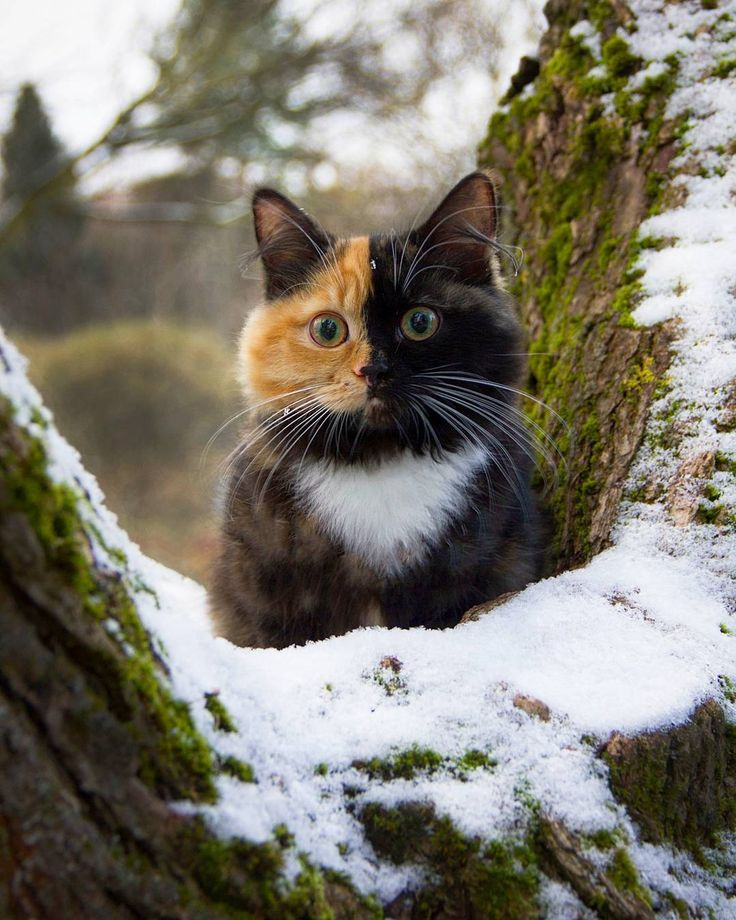
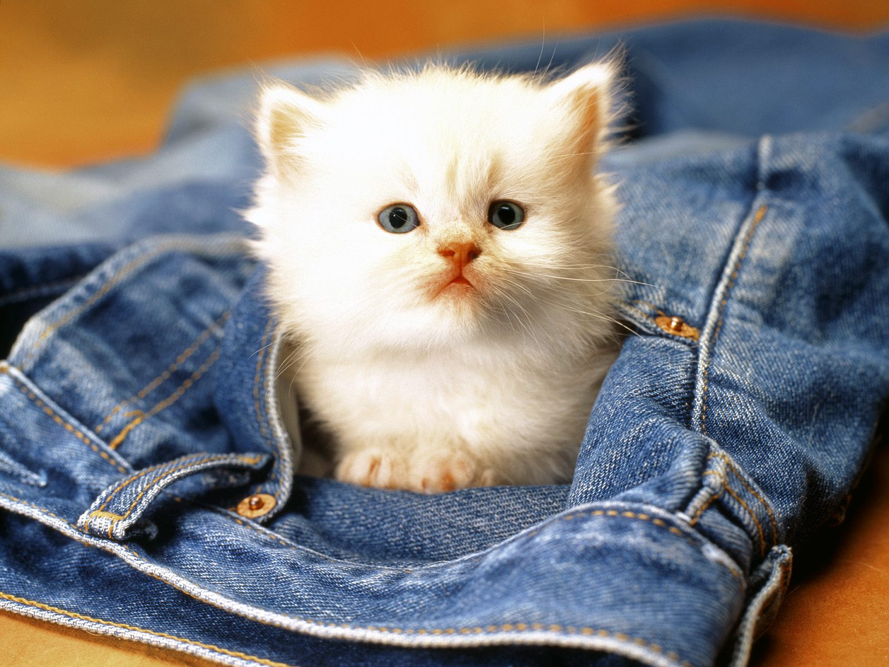
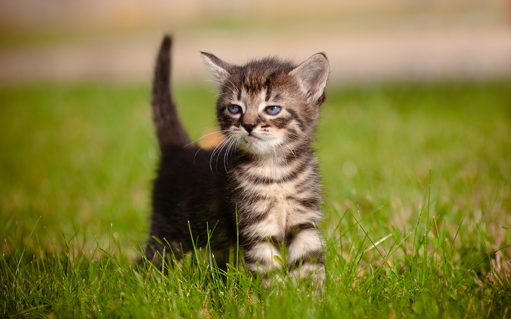

Ко́шка (лат. Felis catus) — домашнее животное, одно из наиболее популярных[1] (наряду с собакой) «животных-компаньонов»[2][3][4].
С точки зрения научной систематики, домашняя кошка — млекопитающее семейства кошачьих отряда хищных. Нередко домашнюю кошку рассматривают как подвид лесной кошки (Felis silvestris) — Felis s. catus[5], однако, с точки зрения современной биологической систематики (2017 год), домашняя кошка является отдельным биологическим видом[6].
Являясь одиночным охотником на грызунов и других мелких животных, кошка — социальное животное[7], использующее для общения широкий диапазон звуковых сигналов, а также феромоны и движения тела[8].
В настоящее время в мире насчитывается около 600 млн домашних кошек[9], выведено около 200 пород, от длинношёрстных (персидская кошка) до лишённых шерсти (сфинксы), признанных и зарегистрированных различными фелинологическими организациями.
На протяжении 10 000 лет кошки ценятся человеком, в том числе за способность охотиться на грызунов и других домашних вредителей[10][11].
 
1. Все котята, вне зависимости от породы, рождаются с голубыми глазами. И только к 7-12 неделям пигмент начнет трансформироваться из синего в их истинный цвет (если их взрослый цвет глаз будет отличаться от голубых глаз)
2. Некоторым кошкам требуется больше времени, чтобы достичь зрелости (хотя я бы тут сказала "взрослости"). Кошки породы мейн-кун, например, не достигает зрелости до трех-четырех лет. До трёх лет они, чаще всего, ведут себя как котята-подростки. Только к этому возрасту они заматереют и станут более солидными.
3. Зубы котенка намного острее по сравнению с зубами взрослой кошки, которые, на самом деле, тупые по краям. Вот почему эти маленькие, острые как бритвы клыки делают так больно, когда вонзаются в твою плоть!
4. Новорожденные котята не имеют возможности регулировать собственную температуру тела. В этом они полностью полагаются на свою маму-кошку, которая помогает им согреться или охладиться.
5. Новорожденные #котята слепы и глухи, пока им не исполнится две-три недели.